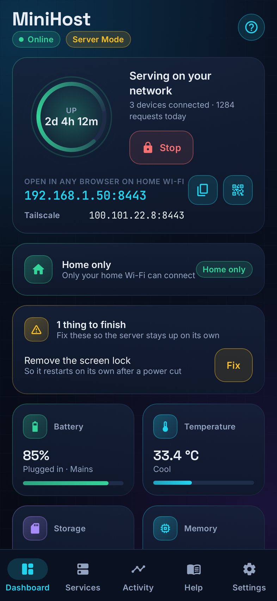
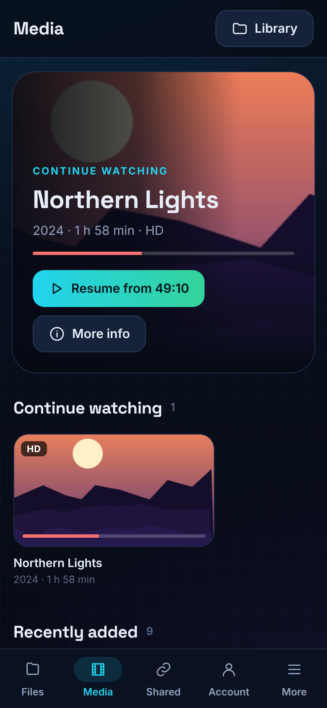
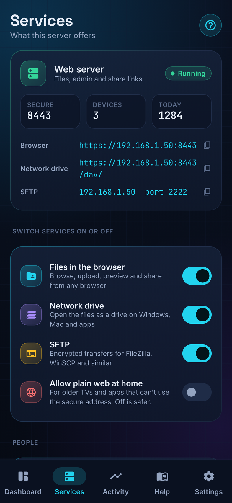
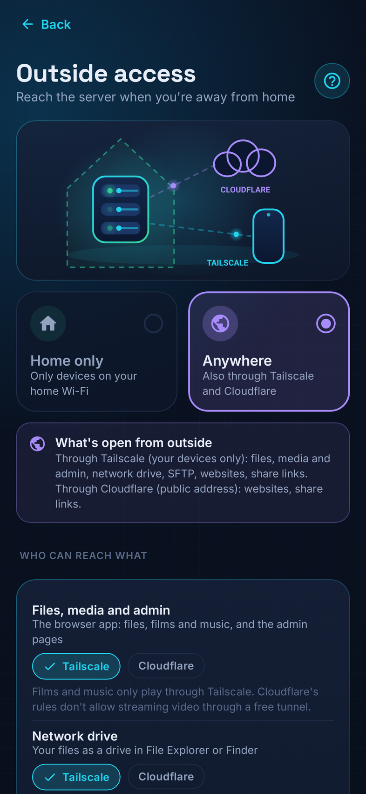
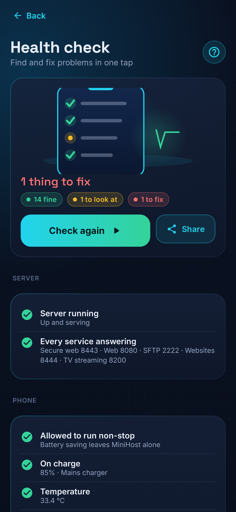
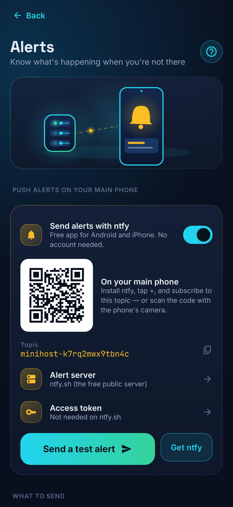
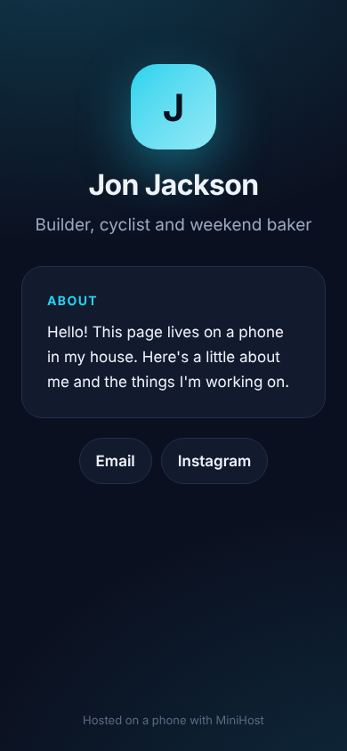
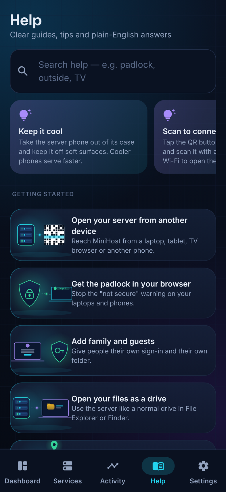
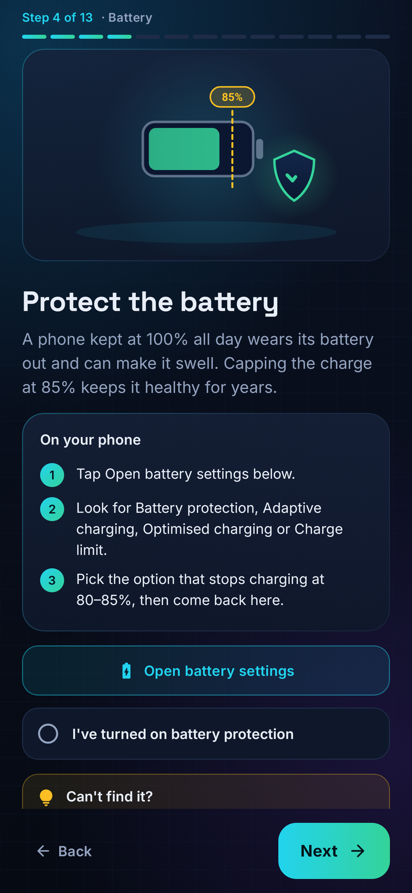
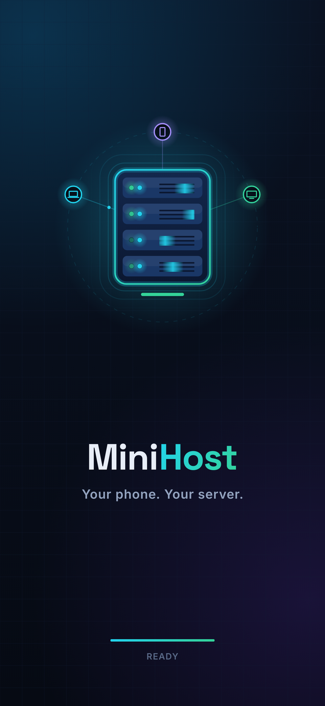

Your phone. Your server.
MiniHost turns a spare Android phone into a proper home server. Your files in any browser and as a drive on your computer, your own websites, and a Netflix-style library of films, shows and music that smart TVs find by themselves.
It runs on your own phone at home, with the padlock, accounts for the family and 6-digit codes for admins. When you want it, switch on Anywhere and reach it away from home through Tailscale or Cloudflare. Nothing goes through anyone else's cloud.
Download for AndroidHow to install
- Version 1.0.0
- Android 10 or later
- 30.7 MB
Free, with nothing to unlock. No adverts, no account with the developer, no tracking. Compare or read the release notes.
Chrome may say the file might be harmful. It shows this for app files that do not come from Google Play. Choose Download anyway.

- Home only by defaultNothing is open to the internet until you say so.
- No accountSet it up on the phone and start.
- No advertsNone in the app and none on this site.
- Nothing to buyEvery feature is free, with no trial and no limits.
A look inside
These are the real screens, drawn from the app's own code with made-up files, films and websites. Swipe or scroll sideways to see them all.









How it works
MiniHost runs real servers on the phone itself: a secure web server, a network drive, SFTP, a websites server and a TV media server. Everything stays on the phone.
Set up the phone
A spare phone on charge at home. The walkthrough sorts out battery saving, start-up after a power cut and a fixed address.
Open it anywhere at home
Type the address shown on the phone into any browser, or scan the QR code. Sign in and your files, films and websites are there.
Reach it away from home
Switch on Anywhere and choose Tailscale for your own devices or Cloudflare for a public web address, service by service.
Everything is in, and all of it is free
Nothing below is held back for a paid tier, because there is no paid tier.
Files
- Files in any browser
- Browse, upload, download, preview photos, videos and PDFs, and edit text files. Uploads of any size pick up again if they drop.
- A drive on your computer
- Map the phone as a network drive in File Explorer or Finder (WebDAV), or use FileZilla and WinSCP over SFTP.
- Share links
- Links that expire, with an optional password and download limit, for people without an account.
- Phone, SD card and USB
- Share the phone's storage, a memory card or a USB drive plugged into it.
Films, TV and music
- A Netflix-style library
- Films, TV shows by season, videos and music albums, with resume points for each person.
- Smart TVs find it
- TVs, games consoles and VLC see the server on your Wi-Fi and play straight from it (DLNA).
- Subtitles
- .srt files next to a video are picked up and shown in the player.
- Playable copies
- Videos a browser can't play can be converted on the phone, pausing if it gets warm.
Websites
- Four ready-made designs
- A personal page, a photo gallery, a link page and a countdown, filled in like a form with a live preview.
- Your own site
- Upload a zip with an index.html and it is published in seconds.
- Several sites at once
- Each at its own address; make one the home page, or keep one private to people with an account.
- Kept apart
- Websites run on their own address, so a site's code can never reach your files or settings.
Safe by design
- The padlock everywhere
- HTTPS with the server's own certificate, which you install once on each device.
- Accounts with roles
- Admin, family and guest, each limited to their own folders. Admins need a 6-digit code.
- Blocked after wrong guesses
- Sign-ins stop after repeated wrong passwords, and every visit is in the activity log.
- Server Mode
- The phone becomes the server and nothing else, with a PIN to leave.
Away from home
- Home only or Anywhere
- One switch. Anywhere can only be switched on at the phone, with its PIN.
- Tailscale
- Private access from your own phones and laptops, with the free Tailscale app.
- Cloudflare
- A public web address with the padlock for your websites and share links, with Cloudflare's own tunnel built in.
- Chosen per service
- Decide which services open through which route. TV streaming always stays at home.
Looking after it
- Alerts on your main phone
- Heat, power cuts, blocked sign-ins, low storage and more, through the free ntfy app.
- Gone-offline check
- Healthchecks.io tells you if the server stops checking in.
- Health check and speed test
- About 20 checks in one tap, each problem with a Fix button.
- Encrypted backups
- Settings, accounts, links, websites and the certificate, saved daily to Google Drive or any folder.
Private by design
Your files stay on your phone
MiniHost serves them straight from the phone. Nothing is uploaded to the developer or anyone else.
No account, no tracking
There is no sign-in with the developer, no analytics and no advertising.
Online only when you choose
Outside access, alerts, film posters, backups to Drive and the update check are all off until you switch them on.
Installing and updating
MiniHost is not on Google Play, so your phone asks a couple of extra questions the first time.
Download the app file
Tap Download on your phone. The file is called MiniHost.apk and is about 30.7 MB. If Chrome says the file might be harmful, choose Download anyway.
Allow the install
Open the file. The first time, Android asks you to allow your browser to install apps. Allow it, go back and tap Install. If Google Play Protect steps in, choose More details, then Install anyway.
Updating later
Settings, About, Check for updates asks GitHub for the newest version only when you tap it, and offers the download. Install the new file over the old one: do not uninstall first, or the server's accounts, links and settings are lost (or restore them from a backup).
Version 1.0.0, released 26 November 2026. See the release notes, or check your download.
Questions
Is MiniHost really free?
Yes. There is no paid version, no trial, no subscription and no adverts. Every feature is in the free app.
Is it on Google Play?
No. MiniHost is a personal project and is downloaded from this site as an Android app file. It needs Android 10 or later.
What phone do I need?
Any spare Android 10 or later phone that can stay on charge at home. Turn on the battery protection setting (charge to 85%) if the phone has one, and keep it somewhere cool.
Can I still use the phone for other things?
MiniHost is designed for a phone used only as a server. Server Mode makes it the home screen with a PIN to leave, so the server is never closed by accident.
Can I reach it away from home?
Yes, when you switch on Anywhere. Tailscale (free) links your own devices privately; Cloudflare (free account, your own domain name) gives websites and share links a public address. Your router doesn't need changing for either.
Is it safe?
It is Home only by default. Every connection uses HTTPS, every person has their own account and folders, admins need a 6-digit code, and sign-ins are blocked after repeated wrong passwords.
Why does the browser say the connection isn't private?
Your server makes its own certificate. Install it once on each device (Help, Get the padlock in your browser) and the warning goes for good.
Do smart TVs work with it?
Most do. TVs, games consoles and VLC find the server on your Wi-Fi through DLNA and play films and music straight from it.
What happens after a power cut?
MiniHost starts again by itself when the phone turns back on. With no screen lock it is back within a minute or two. A watchdog restarts the server if Android ever stops it.
How do I move to a new phone?
Back up in Settings, Backup, then restore the file on the new phone. Accounts, share links, websites and the padlock certificate all come back. Copy your files across as normal.
How do I update it?
Settings, About, Check for updates. Download MiniHost.apk and install it over the old one. Do not uninstall first.
Who made it?
MiniHost is made by Jonathan Jackson, an independent developer in the United Kingdom.
Turn a spare phone into your server
Free, with no adverts and nothing to unlock. Made by the developer of several other free Android apps: see them all.